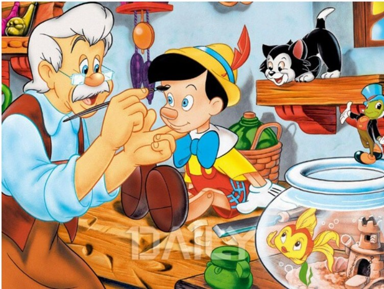

아이들에게 거짓말을 하면 안 된다는 교훈을 주는 피노키오는 성인이 되어서 봐도 은근히 무시무시하게 느껴지는 동화다. 이탈리아의 고전 동화인 ‘피노키오’는 제페토 할아버지가 통나무를 깎아서 인형을 만들었는데 그 인형이 살아 움직이며 벌어지는 이야기를 담고 있다. 피노키오는 거짓말을 하면 코가 길어지는 것으로 유명하다.
오즈의 마법사는 원작은 소설이지만 수많은 각색과 재창작 된 동화로 사랑 받았다. 토네이도에 휩쓸려 마법의 대륙 오즈에 떨어진 주인공 도로시가 집으로 돌아가기 위해 펼치는 모험을 중심으로 전개되는 이야기로, 원작 소설에서는 동화보다 훨씬 더 많은 등장인물과 에피소드가 있으며 상징과 은유가 많이 담겨 있다고 한다.
'피터팬 증후군'이라는 말이 있을 정도로 일상 용어가 된 피터팬. 피터팬은 영원히 아이로 남고 싶은 마음을 가진 아이들이 모인 네버랜드에 사는 고아들의 대장, 피터팬이 주인공인 이야기다. 성인이 되고 나서 다시 보면 어린이들의 순수함과 동심뿐 아니라 아이들의 선악의 양면성을 드러내는 다소 충격적인 내막이 숨겨져 있는 동화임을 알 수 있다.